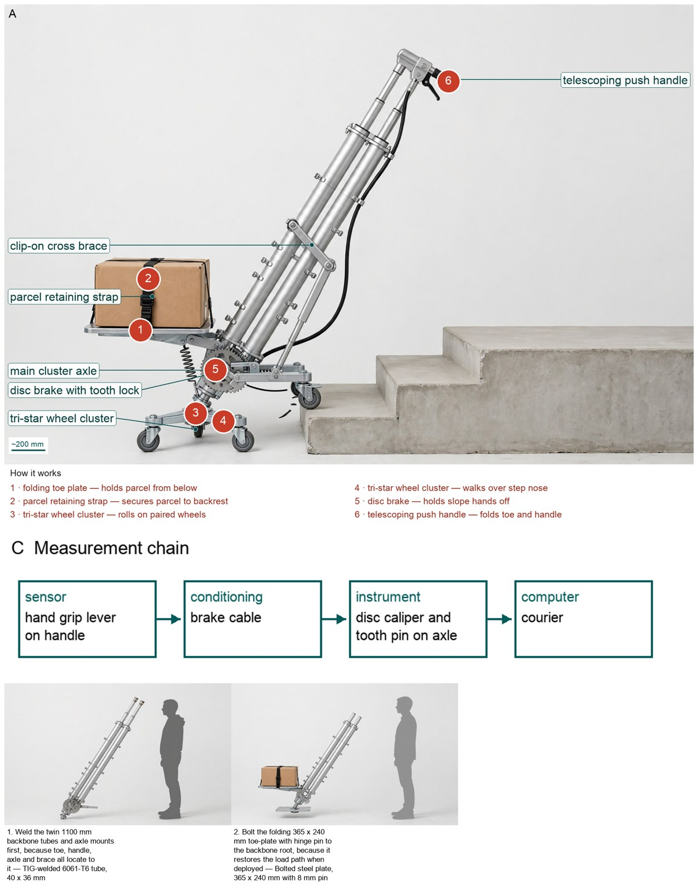
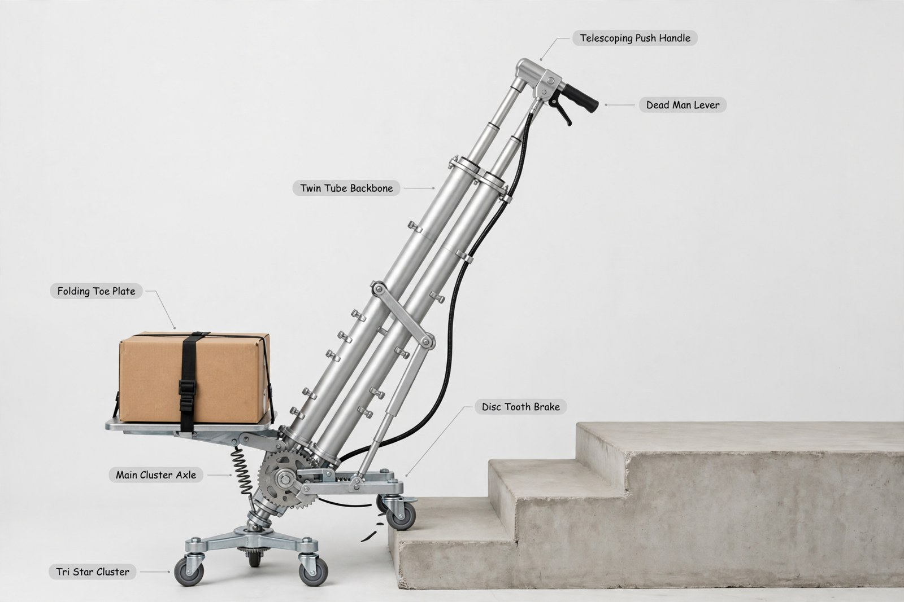

Hardware Engineer — concept report
Stair-climbing hand truck for parcel couriers
Couriers in old city centres carry heavy parcels up residential staircases with no lift. Design a hand truck that lets one courier move a load of about 60 kg up and down stairs safely, and that folds into a delivery van.
- Load about 60 kg
- Operated by one person
The concept

A courier pulls small wheels that walk over each step while a spring brake holds the 60 kg load when the handle is released.
Load: folding toe-plate -> twin-tube backbone -> tri-star wheel cluster | Measured: dead-man lever -> courier
Three decisive design choices
- Keep one-piece twin-tube backbone upsized to 40 by 36 mm over triangulated toe-stay C29 because transverse brace cannot ground cantilever tip per E93 and E115, upsize cuts whip to 43.9 mm per E116 with 40.9 MPa per E118 for 0.37 kg penalty per E117 while stay adds joint in peak 118 N m path per E90 with 503 N tie per E119.
- Use tri-star rotating cluster C1 for stair traverse because it is the only working means pivoting over the 197 mm riser with 185 mm radius and 37.3 N m per side costing 129 J per riser, while pull posture C11 does no stepping and fold-down handle note C19 only aids stow.
- Use dead-man lever with disc plus tooth park pin C7 with C20 for limiting because release means locked holding 74.6 N m total against 209 N pull and 188 N hold exceeding sustained limits, while friction-only contact brake C3 alone cannot be trusted without positive lock.
How do lever release feel and tooth-pin engagement behave under full slope load in a hardware bench test?
What happened
How the picture was made


What the critic flagged:
- callout: leader from Folding Toe Plate ends on top of brown parcel/strap, not on plate
What the segmenter saw (SAM 3.1)
Code asked SAM for each part by a plain phrase and measured the boxes against what the design expects; the critic received the differences as evidence.

How the council changed
Revision 1
- Mara Voss — Structural Frame & Load Path's instructions changed:
+- Prove stiffness only after naming the support model and its applicable regime before claiming any change from a tie or brace, because a member that bends together with its neighbours is not a new ground support. +- Use one load-centre offset for every moment and stress driven by that load, because two offsets for one load break traceability. +- Show any impact or dynamic allowance by calculation when it is retained, because an uncalculated factor hides the assumed overload. +- Evaluate deflection effects on handling and step engagement before agreement, because a strong tube can still steer badly when it whips.
- Kenji Tanaka — Stair-Climbing Locomotion's instructions changed:
+- Declare once whether each force, torque and power is total or per-side and reuse that definition consistently, because mixing totals with per-side values corrupts sizing. +- Carry total lifted mass including device plus payload through work, slope load, pull, hold and lock torque on the steepest step, because payload-only energy understates the work the operator must do. +- Reconcile simulation inputs with agreed prior mass and geometry evidence before sizing brakes or locks, because a correctly solved mechanism still fails when fed unsettled inputs.
- Elena Ruiz — Human Factors & Single-Operator Safety's instructions changed:
+- Cite only opened and read sources for hand-force and posture limits, because unopened search hits cannot carry a safety case. +- Show lever advantage with friction and cable losses plus required finger force to release and meter the brake and the locked holding margin including dynamic allowance on the largest slope load, because a lock that cannot be released and metered by a tired hand is not single-operator safe. +- Keep the descent-hold concern open until that calculation shows margin in the meeting rather than deferring to later hardware, because a calculable margin deferred is an unchecked safety claim.
- Tomas Lind — Folding & Van Integration's instructions changed:
+- Prove folded fit by stacking every folded length, width and thickness contributor against the matching envelope axis, because a volume total can fit where the stacked shape cannot. +- Post a labeled sketch whenever fold geometry or stow interface changes, because positions that matter cannot be judged from words alone. +- Reuse existing dimension evidence by id before computing anew and state why when recomputing, because remeasuring invites divergent inputs. +- Check folded and deployed sizes against a person and a doorway before relying on them, because everyday scales catch unit and decimal slips.
References
117 sources found by the council's searches and the prior-art check (click to open)
- fliphtml5.com — STANLEY-HANDTRUCKS - Flipbook by MSGROUP | FlipHTML5 https://fliphtml5.com/nvnkv/fymw/STANLEY-HANDTRUCKS/6/
- sacktrucks.co.uk — Stair Climbing Sack Trucks & Trolleys https://www.sacktrucks.co.uk/stair-climber-trucks/
- homedit.com — Standard Stair Step Height and Code Guidelines https://www.homedit.com/step-height/
- svelt.it — Superlift Stair Climbing Trolley https://www.svelt.it/en/products/handtrucks-and-ergonomic-wheelbarrows/manual-or-electrical-stair-climber-handtrucks/stair-climber-trolley-superlift
- vevor.com.au — VEVOR Stair Climbing Carts – Heavy-Duty & Foldable Options https://www.vevor.com.au/janitorial-carts-c_42407
- angi.com — Standard Size of a Staircase: Guide to Dimensions | Angi https://www.angi.com/articles/standard-staircase-size.htm
- gneealuminum.com — 6061-T6, T4 and T5 Seamless Aluminum Pipe: Tempers, Properties and Uses https://www.gneealuminum.com/info/6061-t6-t4-t5-seamless-pipe-103228772.html
- manuals.plus — Mount-It! Stair Climbing Dolly Instruction Manual https://manuals.plus/asin/B07X13DJWR
- fis.cld.bz — PSI - Issue 12 https://fis.cld.bz/PSI-Issue-12/106/
- jtecindustrstg.wpenginepowered.com — OCP Data Server Cart Whitepaper (2025) https://jtecindustrstg.wpenginepowered.com/wp-content/uploads/2025/06/OCP-Data-Server-Cart-Whitepaper-1-1.pdf
- casterconnection.com — Ergonomic Casters Education https://casterconnection.com/caster-education/ergonomic-casters-education
- yumpu.com — 8 <strong>ERGONOMICS</str https://www.yumpu.com/en/document/view/3753522/ergonomics-guidelines-for-manual-handling/9
- shunhehandtruck.com — The Ergonomics Case for Folding Hand Trucks: What Safety Research Says About Protecting Workers https://www.shunhehandtruck.com/the-ergonomics-case-for-folding-hand-trucks-what-safety-research-says-about-protecting-workers.html
- fruugo.sk — Trolleys Stair Climbing Trolley 6 Wheels Aluminium Folding Hand Cart Steps | Fruugo SK https://www.fruugo.sk/trolleys-stair-climbing-trolley-6-wheels-aluminium-folding-hand-cart-steps/p-300575848-673165282?language=pl
- nen.nl — NEN-EN 1757:2022 en (2022) https://www.nen.nl/en/nen-en-1757-2022-en-296530
- hme-business.com — Reducing Ergonomic Hazards - HME Business https://hme-business.com/reducing-ergonomic-hazards/
- online.documentine.com — push it or pull it erg033 - m-and-m-you-pull-it https://online.documentine.com/m-and-m-you-pull-it/1/push-it-or-pull-it-erg033.html
- slingsby.com — Compact folding sack truck, capacity 90kg https://www.slingsby.com/compact-folding-sack-truck-capacity-90kg-313195.html
- espaciofurgo.com — Ford Transit Courier https://www.espaciofurgo.com/en/plug/Ford-Transit-Courier/
- handle-it.com — Powered Stair Climbing Sack Truck https://handle-it.com/powered-stair-climbing-sack-truck/
- officesupply.com — Safco Stow-Away Medium-Size Hand Truck, 275 Lb. Capacity, 7" Wheels | OfficeSupply.com https://www.officesupply.com/cleaning-breakroom/cleaning-janitorial-supplies/janitorial-products/janitorial-carts/safco-stow-away-medium-size-hand-truck-capacity-wheels/p12206.html?categoryId=113367
- basworld.com — Volkswagen Transporter dimensions and load volume https://www.basworld.com/content/volkswagen-transporter-dimensions-and-load-volume
- tsinox.com — Aluminium Drawn Tube 6061 https://www.tsinox.com/aluminum/aluminium-drawn-tube-6061.html
- handtrucks2go.com — Fold Handle Wesco SAL Powered Liftkar, ON SALE & FREE... https://handtrucks2go.com/Wesco-Liftkar-SAL-Folding-Handle-Powered-Stair-Climbing-Hand-Truck.html
- patents.google.com — US20090133517A1 - Mechanical Tri-Wheel Retention Assembly for Stair-Climbing Wheeled Vehicle
- - Google Patents https://patents.google.com/patent/US20090133517A1/en
- bikelabstudio.com — The Bicycle Physics of the Hydraulic Brake https://www.bikelabstudio.com/articles/bicycle-hydraulic-brakes-encyclopedia-en.html
- picclick.com.au — PAIR HYDRAULIC DISC Brakes Left Front Right Rear MTB Bike 160mm Caliper Rotor AU https://picclick.com.au/Pair-Hydraulic-Disc-Brakes-Left-Front-Right-Rear-336849198399.html
- picclick.com.au — BUCKLOS ELECTRIC BIKE Hydraulic Brake Set Front&Rear 1100&1800mm 2pc 160mm Rotor https://picclick.com.au/BUCKLOS-Electric-Bike-Hydraulic-Brake-Set-FrontRear-11001800mm-336017742205.html
- patentsencyclopedia.com — Stair-Climbing Wheeled Vehicle - Patent application https://www.patentsencyclopedia.com/app/20100032911
- physicsforums.com — Disc brake effectiveness varies on rotor size? https://www.physicsforums.com/threads/disc-brake-effectiveness-varies-on-rotor-size.261308/
- blog.junyunhoist.com — JUNYUNHOIST - News blog - Pallet Jack Quality Standards: Testing & Certifications https://blog.junyunhoist.com/blog/Pallet-Jack-Quality-Standards-Testing-and-Certifications-That-Guarantee-Safety.html
- copyprogramming.com — Push or Pull on an Object: Physics Theory, Ergonomics, and 2026 Best Practices - Push or pull on an object (2026) https://copyprogramming.com/howto/ability-to-push-and-pull-objects-theory
- gso-sims-preview-doc-aws.s3-eu-west-1.amazonaws.com — GSO ISO 11228-2:2015 (2015) https://gso-sims-preview-doc-aws.s3-eu-west-1.amazonaws.com/gso-iso-11228-2-2015-en.pdf
- 1library.net — Operating posture - Ergonomics Design Considerations https://1library.net/article/operating-posture-ergonomics-design-considerations.zxm6r04y
- ergoweb.com — Review of Hand/Wrist/Arm Ergonomics Analysis Methods: Part 1 https://ergoweb.com/review-of-hand-wrist-arm-ergonomics-job-analysis-methods-part-1/
- pdf.medicalexpo.fr — Heavy Duty Flatbed Trolley with Deadman Brake - Handle-iT - Catalogue PDF | Documentation technique | Brochure https://pdf.medicalexpo.fr/pdf-en/handle-it/heavy-duty-flatbed-trolley-deadman-brake/4609340-291136.html
- pdf.aeroexpo.online — Heavy Duty Flatbed Trolley with Deadman Brake - Handle-iT Ltd - Catalogo PDF | Documentazione tecnica | Brochure https://pdf.aeroexpo.online/it/pdf-en/handle-it-ltd/heavy-duty-flatbed-trolley-deadman-brake/180712-29896.html
- theworkplacedepot.co.uk — Hand Pallet Pump Trucks https://www.theworkplacedepot.co.uk/hand-pallet-pump-trucks
- wedolifting.com — Load securing for lashing cargo - good quality and strength https://wedolifting.com/pages/load-restraint
- incredibletourtravel.com — Lashing: how to ensure safety in the transport of goods? https://incredibletourtravel.com/lashing-how-to-ensure-safety-in-the-transport-of-goods/
- patents.justia.com — US Patent Application for Kick boards Patent Application (Application #20020180169 issued December 5, 2002) - Justia Patents Search (2002) https://patents.justia.com/patent/20020180169
- patents.google.com — US20020180169A1 - Kick boards
- - Google Patents https://patents.google.com/patent/US20020180169A1/en
- insurancefactory.co.uk — News | Insurance Factory (2019) https://www.insurancefactory.co.uk/news/June-2019/Top-5-vehicles-for-your-courier-business
- perkinsfordservice.co.uk — Used Ford Transit Courier for Sale in Braintree, Essex | Compact Work Vans | Perkins Garage https://www.perkinsfordservice.co.uk/usedcars/ford/transit-courier
- safeatworkca.com — Carts: Push/Pull Guidelines https://www.safeatworkca.com/safety-articles/carts-push-pull-guidelines/
- ergoweb.com — Force Guidelines – Ergoweb LLC https://ergoweb.com/force-guidelines/
- mktg.idec.com — ISO 11228-2? https://mktg.idec.com/hubfs/EU_AWD/AWD_ISO-11228-2.pdf?hsLang=en
- 3armamerica.com — 3arm Solutions Help Manufacturers Maintain Safe Limits of Force Exertion https://3armamerica.com/3arm-solutions-help-manufacturers-maintain-safe-limits-of-force-exertion-to-protect-operators/
- dirtsmartmtb.com — Technique of the Week: Brake Levers and Braking Technique https://www.dirtsmartmtb.com/uncategorized/technique-week-stuff-brake-levers-probably-didnt-know/
- welovecycling.com — Is Your Brake Lever Set Up Correctly? (2018) https://www.welovecycling.com/wide/2018/09/28/is-your-brake-lever-set-up-correctly/
- content.statefundca.com — ErgoMatters https://content.statefundca.com/safety/ErgoMatters/Carts.asp
- ezlifts.com — Why Caster Design Matters in Safe Patient Transers https://www.ezlifts.com/post/why-caster-design-matters-in-safe-patient-transers
- tradeinn.com — Mission Captive left brake lever, Silver | Bikeinn https://www.tradeinn.com/bikeinn/en/mission-captive-left-brake-lever/140442684/p
- bigshopper.co.uk — Magura Brake Lever Blade MT7 2 Finger With Reach Adjust https://bigshopper.co.uk/product/magura-brake-lever-blade-mt7-2-finger-with-reach-adjust-990408469.htm
- Standards.Iteh.ai — ISO 11228-2:2007 Ergonomics Manual Handling Pushing and Pulling Guide (2007) https://Standards.Iteh.ai/catalog/standards/iso/0a5d43eb-2ee9-4181-90d8-c1af856402de/iso-11228-2-2007?reviews=true
- darcor.com — Industrial Ergonomics Regulations around the World (2017) https://darcor.com/2017/12/12/industrial-ergonomics-regulations-around-the-world/
- firstmats.co.uk — Steel Stair Climber Sack Truck with Skids https://www.firstmats.co.uk/products/steel-stair-climber-sack-truck-with-skids
- patentscope.wipo.int — WO/2023/137072 MECHANICAL HAND TRUCKS WITH ENHANCED STAIR CLIMBING AND DESCENDING CAPABILITY http://patentscope.wipo.int/search/en/WO2023137072
- upcart.com — Folding Flat Stair Climbing Trolley | Compact Fold All Terrain Hand Truck – UpCart® https://upcart.com/products/folding-stair-climbing-trolley-hand-truck
- firstmats.co.uk — Aluminium Stair Climber Sack Truck with Skids https://www.firstmats.co.uk/products/aluminium-stair-climber-sack-truck-with-skids
- firstmats.co.uk — Compact Folding Stair Climber Sack Truck https://www.firstmats.co.uk/products/compact-folding-stair-climber-sack-truck
- firstmats.co.uk — Stair Climbing Sack Trucks https://www.firstmats.co.uk/collections/stair-climber-sack-trucks
- bulgaria.desertcart.com — Fullwatt Stair Climbing Cart Folding Stair Climber Dolly With 155 | Desertcart Bulgaria https://bulgaria.desertcart.com/products/278900517-fullwatt-stair-climbing-cart-folding-stair-climber-dolly-with-155
- huntoffice.ie — Stair Climbing Hand Truck With Skids - Capacity - 150kg, on stairs 60kg - Steel Construction https://www.huntoffice.ie/stairclimbing-handtruck-with-skids-sy395682.html
- foreign-trade.com — 3 Tri Wheel Climbing Hand Trolley HT4105 https://www.foreign-trade.com/wholesale/3-Tri-Wheel-Climbing-Hand-Trolley_172440.html
- confocal-manawatu.pbworks.com — LikeInMind / StairClimbers http://confocal-manawatu.pbworks.com/w/page/151248996/StairClimbers?rev=1669752700
- desertcart.jp — Stair Climbing Cart With 6 Wheels Folding Hand Truck Portable | Desertcart Japan https://www.desertcart.jp/products/255597409-stair-climbing-cart-with-6-wheels-folding-hand-truck-portable
- desertcart.bo — Stair Climbing Cart With 6 Wheels Folding Hand Truck Portable | Desertcart Bolivia https://www.desertcart.bo/products/255597409-stair-climbing-cart-with-6-wheels-folding-hand-truck-portable
- desertcart.kg — Stair Climbing Cart With 6 Wheels Folding Hand Truck Portable | Desertcart Kyrgyzstan https://www.desertcart.kg/products/255597409-stair-climbing-cart-with-6-wheels-folding-hand-truck-portable
- patents.google.com — US2597532A - Hand truck https://patents.google.com/patent/US2597532A/en
- patents.google.com — DE1024367B - https://patents.google.com/patent/DE1024367B/en
- patentimages.storage.googleapis.com — 1498390393077802365-05277436 https://patentimages.storage.googleapis.com/7f/5a/43/43b7d9d1e02208/US5277436.pdf
- patents.justia.com — U.S. Patent for Hand truck Patent (Patent # 4,142,732 issued March 6, 1979) - Justia Patents Search http://patents.justia.com/patent/4142732
- patentsencyclopedia.com — STAIR-CLIMBING DEVICE - Patent application https://www.patentsencyclopedia.com/patents/app/20110260417
- patents.google.com — US20140021006A1 - Handtruck with lcd interface https://patents.google.com/patent/US20140021006A1/en
- patents.google.com — JP2722293B2 - https://patents.google.com/patent/JP2722293B2/en
- freepatentsonline.com — Two-wheel hand truck with elevator - WALKER; BRUCE A. https://www.freepatentsonline.com/3896904.html
- patents.justia.com — U.S. Patent for Stair-climbing device Patent (Patent # 8,439,370 issued May 14, 2013) - Justia Patents Search https://patents.justia.com/patent/8439370
- amazon.com — UpCart The All-Terrain Stair Climbing Folding Cart https://www.amazon.com/dp/B0153I9COI
- upcart.com — Shop Folding Hand Trucks & Carts Online | UpCart – UpCart® https://upcart.com/collections/folding-hand-truck-cart
- upcart.com — Buy Stair Climbing Trolley Dolly Cart | Easy & Durable – UpCart® https://upcart.com/products/stair-climbing-trolley-dolly
- bestdollies.com — Top 5 Stair Climbing Hand Trucks and Dollies https://bestdollies.com/blog/top-5-stair-climbing-hand-trucks-and-dollies/
- pricehistory.co.uk — UpCart Stair Climbing Trolley (7116241) | Argos Price Tracker | pricehistory.co.uk https://www.pricehistory.co.uk/product/7116241/upcart-stair-climbing-trolley
- spacemazing.com — The Best Selection of Stair Dolly & Electric Stair Climbing Hand Trucks in 2026 - SpaceMazing https://spacemazing.com/best-stair-dolly/
- manuals.plus — All Terrain 140 CARRY UP TO - ###### Stair POUNDS https://manuals.plus/m/74f0796532ef0fd33e67e94d92e44578f5616c09d22e8b89306bccdff1ff1c86.pdf
- manualshelf.com — UPCART 200 lb. Capacity Lift Folding Hand Truck : Instructions / Assembly https://www.manualshelf.com/manual/upcart/mphd-1/instructions-assembly-english.html
- upcart.com — Foldable Stair Climbing Trolley | Folding Stair Climbing Cart – UpCart® https://upcart.com/products/upcart%C2%AE-boost
- appliancemind.com — The Best Grocery Cart for Stairs: Making Your Shopping Trips Effortless - ApplianceMind https://appliancemind.com/best-grocery-cart-for-stairs/
- patents.google.com — US4142732A - Hand truck https://patents.google.com/patent/US4142732A/en
- desertcart.kr — Aloxe Folding Portable Stair Climbing Cart Trolley Portable Luggage Trolley | Desertcart South Korea https://www.desertcart.kr/products/538876877-aloxe-folding-portable-stair-climbing-cart-trolley-portable-luggage-trolley
- desertcart.ae — Aloxe Folding Portable Stair Climbing Cart Trolley Portable Luggage Trolley | Desertcart UAE https://www.desertcart.ae/products/538876877-aloxe-folding-portable-stair-climbing-cart-trolley-portable-luggage-trolley
- homedepot.com — 3-in-1 Folding Stair Climbing Hand Truck with 6 Wheel All-Terrain Stair Climber, Telescoping Handle, 550 lb Capacity https://www.homedepot.com/p/Sunvasagoo-3-in-1-Folding-Stair-Climbing-Hand-Truck-with-6-Wheel-All-Terrain-Stair-Climber-Telescoping-Handle-550-lb-Capacity-06ZHB-cb2yFn0sD6/700326397
- spode.co.za — Stair Climbing Trolley - Large Heavy Duty | Hand Truck https://spode.co.za/product/stair-climbing-trolley-large-heavy-duty/
- spode.co.za — Stair Climbing Trolley – Large | Hand Truck for Stairs https://spode.co.za/product/stair-climbing-trolley-large/
- mightyape.co.nz — Buy Stair Climbing Trolley 6 Wheels Aluminium Folding Hand Cart Climb Steps | Mighty Ape NZ https://www.mightyape.co.nz/mn/buy/stair-climbing-trolley-6-wheels-aluminium-folding-hand-cart-climb-steps-828111/
- theworkplacedepot.co.uk — Stair Climbing Sack Truck http://www.theworkplacedepot.co.uk/steel-stair-climber-sack-truck
- serranoaustralia.com.au — Stair Climbing Trolley | 6-Wheel Folding Hand Cart | Australia's DIY, Renovation, Home and Lifestyle Store https://serranoaustralia.com.au/products/stair-climbing-trolley-6-wheels-aluminium-folding-hand-cart-climb-steps-1
- tradeindia.com — Folding Stair Climber 30/60kg Sxwt-ft584 - Feature: Its Slim Compact Design Ensure Smooth Handling. at Best Price in Coimbatore | Technocart Online Services Private Limited https://www.tradeindia.com/products/stanley-stair-climber-with-3-wheels-30-60kg-sxwt-ft584-7282560.html
- patents.google.com — EP3670294A1 - Transport device and method for transporting a load on a staircase https://patents.google.com/patent/EP3670294A1/en
- patents.google.com — US2772096A - Appliance hand truck provided with stair-climbing attachment https://patents.google.com/patent/US2772096A/en
- patents.justia.com — Stair-Climbing Wheeled Vehicle https://patents.justia.com/patent/20100032911
- patents.justia.com — Two-wheel hand truck https://patents.justia.com/patent/6386552
- patents.justia.com — Combination hand truck and stair ramp https://patents.justia.com/patent/5277436
- patents.google.com — US20130186698A1 - Stair climbing wheeled vehicle, and system and method of making and using same https://patents.google.com/patent/US20130186698A1/en
- patents.google.com — US3614115A - Stair truck https://patents.google.com/patent/US3614115A/en
- ajproducts.co.uk — Compact aluminium stair climbing sack truck https://www.ajproducts.co.uk/p/compact-aluminium-stair-climbing-sack-truck-440578-440576?VAT=1&utm_source=facebook&utm_medium=cpc&utm_campaign=rem_dyn_product_ads&utm_term=Sack+trucks&utm_content=15-6647
- ajproducts.ie — Compact aluminium stair climbing sack truck https://www.ajproducts.ie/p/compact-aluminium-stair-climbing-sack-truck-440578-440576
- tooled-up.com — Draper Heavy Duty Stair Climbing Sack Truck Trolley | Draper Sack Truck Trolleys https://www.tooled-up.com/draper-heavy-duty-stair-climbing-sack-truck-trolley/prod/288431/?manId=draper
- esedirect.co.uk — 120kg Folding Stairclimbing Sack Truck https://www.esedirect.co.uk/p-6948-120kg-folding-stairclimbing-sack-truck.aspx
- integration-nitro5.ajproducts.co.uk — Stair climbing sack truck BOYER https://integration-nitro5.ajproducts.co.uk/warehouse-workshop/trolleys-castors/sack-trucks/stair-climbing-trolleys/stair-climbing-sack-truck-860966-860964
- ajproducts.co.uk — Compact aluminium stair climbing sack truck https://www.ajproducts.co.uk/warehouse-workshop/trolleys-castors/sack-trucks/stair-climbing-trolleys/compact-aluminium-stair-climbing-sack-truck-440578-440576
- ajproducts.co.uk — Stair climbing sack truck BOYER, 200 kg load https://www.ajproducts.co.uk/warehouse-workshop/trolleys-castors/sack-trucks/stair-climbing-trolleys/stair-climbing-sack-truck-17789-17787
- esedirect.co.uk — Extra-Wide Stairclimber Trolley https://www.esedirect.co.uk/extra-wide-stairclimber-trolley.html
- ajproducts.ie — Stair climbing sack truck BOYER, 200 kg load https://www.ajproducts.ie/warehouse-workshop/trolleys-castors/sack-trucks/stair-climbing-trolleys/stair-climbing-sack-truck-17789-17787
- desertcart.kg — Heavy Duty Stair Climbing Trolley With Folding Plate And Pneumatic | Desertcart Kyrgyzstan https://www.desertcart.kg/products/224938804-heavy-duty-stair-climbing-trolley-with-folding-plate-and-pneumatic
Files
- Whiteboard replay
- Reference list (Markdown)
- iter_00 transcript · whiteboard
- iter_01 transcript · whiteboard
Run 20261104-142329_stair-climbing-hand-truck-for-parcel-cou · total cost $5.87 · conceptual illustration — physical performance not established.